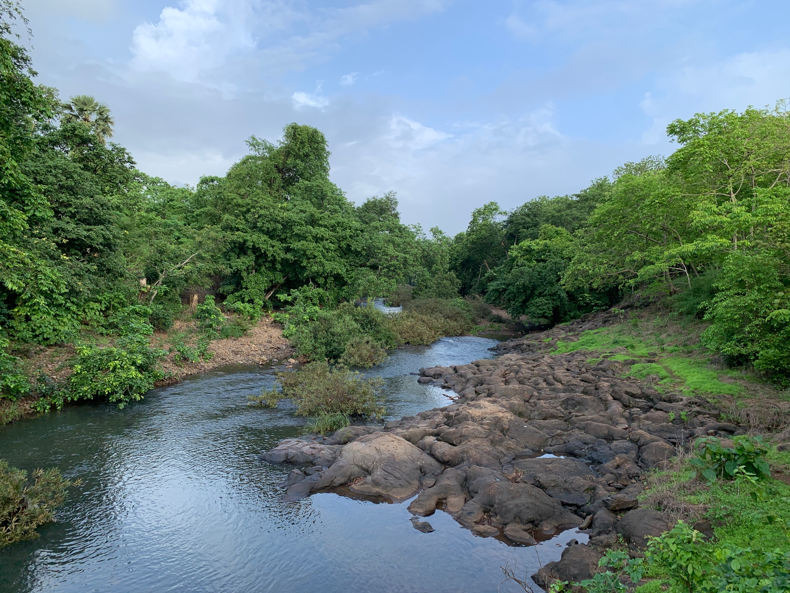
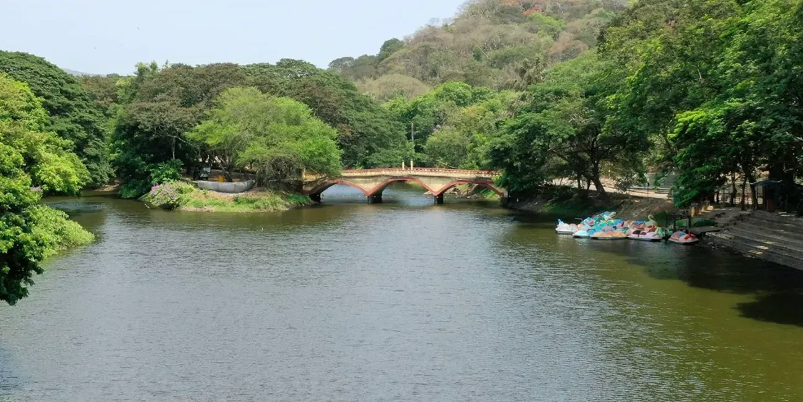
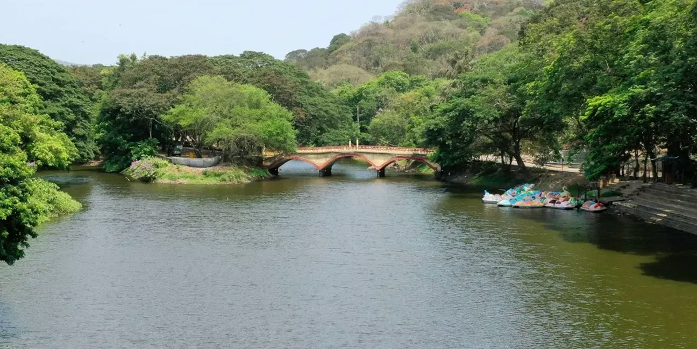
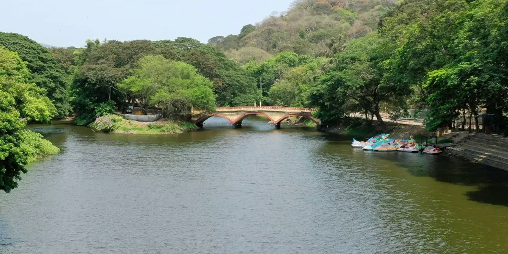

Explore Borivali National Park


 


🌿 Introduction
Borivali National Park, officially known as Sanjay Gandhi National Park, is a lush green oasis within Mumbai. It is famous for its rich biodiversity, walking trails, and the ancient Kanheri Caves.
📍 History
The park was established in 1969 and covers an area of over 100 sq km. The Kanheri Caves inside date back to the 1st century BCE and served as a Buddhist settlement.
🕒 Best Time to Visit
- November to February
- Morning hours for pleasant weather
🎟️ Timings & Entry
- Open: 7:30 AM – 6:30 PM
- Entry Fee: ₹85 for adults
- Optional: Toy Train, Safari, Bicycle Rentals
✨ Activities
- Tiger & Lion Safari
- Kanheri Caves exploration
- Nature walks and cycling
- Boating and picnicking